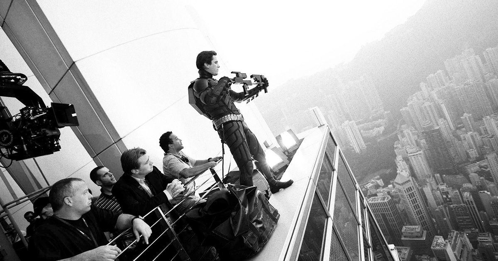
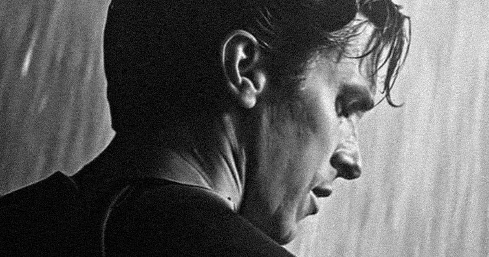
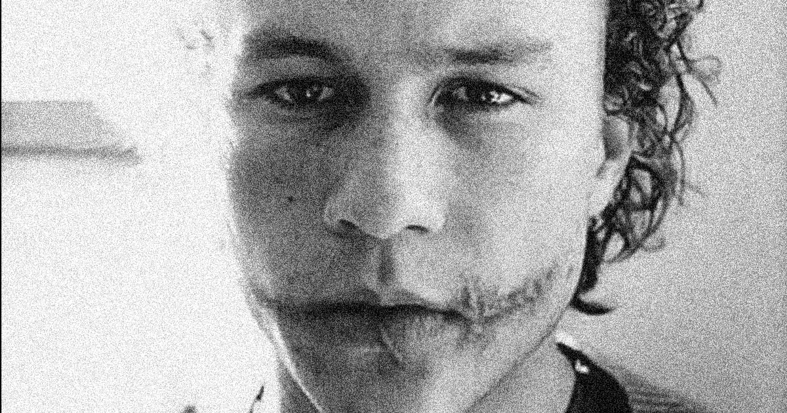

The Nolanverse Batman, introduced in The Dark Knight Trilogy (2005–2012), reimagined the character with unprecedented realism and psychological depth. Portrayed by Christian Bale, this version of Bruce Wayne is a grounded, human figure whose transformation into Batman is driven by fear, trauma, and a search for purpose. Nolan’s films—Batman Begins, The Dark Knight, and The Dark Knight Rises—stripped away the fantastical elements of previous adaptations, presenting Gotham as a gritty, modern metropolis plagued by corruption and moral decay. The trilogy explored themes of justice, chaos, and sacrifice, anchored by powerful performances and philosophical storytelling. The Dark Knight, in particular, became a cultural milestone, earning critical acclaim for its moral complexity and Heath Ledger’s iconic portrayal of the Joker, solidifying the Nolanverse as one of the most influential interpretations of Batman in cinematic history.
Christopher Nolan’s vision for The Dark Knight Trilogy centered on grounding Batman in a believable, tangible world—one built on realism rather than spectacle. To achieve this, Nolan relied heavily on practical effects and real-world filmmaking techniques instead of CGI, giving the trilogy its distinctive grit and authenticity. Massive set pieces, such as the flipping of a full-sized eighteen-wheeler in The Dark Knight or the midair plane hijacking in The Dark Knight Rises, were executed with meticulous precision using practical stunts and in-camera effects. Nolan’s insistence on realism extended to the design of Gotham City, the Batmobile (reimagined as the military-grade Tumbler), and even Batman’s gadgets, all of which were engineered to feel functional and plausible. This commitment to practical filmmaking not only heightened the sense of immersion but also reinforced Nolan’s thematic focus on the human limits of heroism and the physical weight of Batman’s world.
Christain Bale took his role as lead actor seriously, and his commitment to portraying both Bruce Wayne and Batman in The Dark Knight Trilogy was nothing short of transformative. Known for his intense method approach, Bale immersed himself physically and psychologically in the dual role, embodying both the disciplined warrior and the tormented man beneath the mask. To prepare, he underwent rigorous martial arts and strength training, sculpting a physique that reflected Batman’s peak human condition. He studied various fighting styles, including Keysi and Wing Chun, to bring authenticity to the character’s combat techniques. Beyond the physical preparation, Bale explored the emotional complexity of Bruce Wayne’s trauma, isolation, and moral struggle, crafting a portrayal that balanced vulnerability with unyielding resolve. His dedication—evident in the subtle nuances of his performance and the emotional weight he brought to the role—helped redefine Batman for modern cinema, making his version one of the most respected and human interpretations of the character ever filmed.
The second and most praised film in the series, The Dark Knight, features the Joker as Batman's nemesis. Heath Ledger's performance in this role is nothing short of legendary. Although his untimely death claimed him before he was fully recognized for his work, the mastery with which Ledger brought to life the Joker will forever define what makes a good Joker performance. His Joker was less a comic book villain and more a force of nature, embodying pure nihilism and psychological terror. From his unsettling mannerisms to his haunting delivery, Ledger’s performance brought a raw, unsettling realism to the character, earning him his posthumous Academy Award for Best Supporting Actor and forever redefining the standard for cinematic villains.
